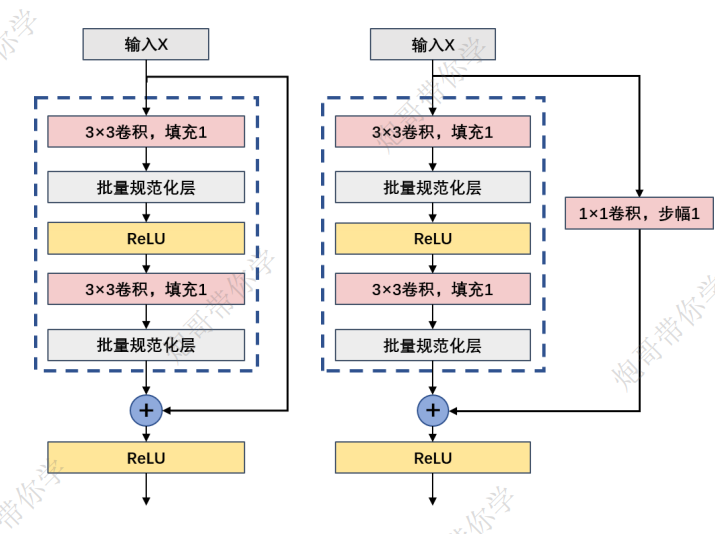
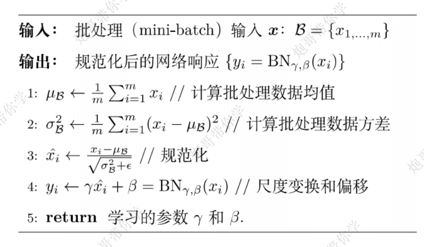
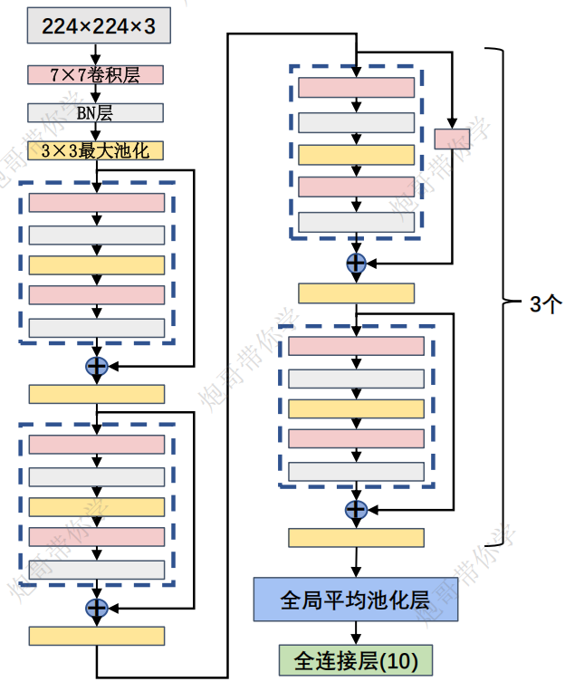

ResNet
前情提要
已经学过了LeNet,AlexNet,VGG,GoogleNet等深度学习的基本模型,在ResNet,没发现之前,深度学习模型为了提升性能都会去增加深度,但无脑的增加深度就会引起梯度的爆炸或消失.为了解决这个主要问题,ResNet模型应运而生.而且学习ResNet模型也为后续的学习打下基础(后续模型有很多结构用了ResNet)
ResNet的诞生背景
深度残差网络(deep residual network)是2015年微软何凯明团队发表的一篇名为：《Deep Residual Learning for Image Recognition》的论文中提出的一种全新的网络结构，其核心模块是残差块residual block。正是由于残差块结构的出现使得深度神经网络模型的层数可以不断加深到100层、1000层甚至更深，从而使得该团队在当年的ILSVRC 2015分类竞赛中取得卓越成绩，也深刻地影响了以后的很多深度神经网络的结构设计。 残差网络的成功不仅表现在其在ILSVRC 2015竞赛中的卓越效果，更是因为残差块skipconnection/shorcut这样优秀的思想和设计，使得卷积网络随着层数加深而导致的模型退化问题能被够大幅解决，使模型深度提高一个数量级，到达上百、上千层。
ResNet的基础架构–残差块

ResNet的基础架构–残差块（residual block）。在残差块中，输入可通过跨层数据线路更快地向前传播。ResNet沿用了VGG完整的3×3卷积层设计。残差块里首先有2个有相同输出通道数的3×3卷积层。每个卷积层后接一个批量规范化层和ReLU激活函数。然后我们通过跨层数据通路，跳过这2个卷积运算，将输入直接加在最后的ReLU激活函数前。这样的设计要求2个卷积层的输出与输入形状一样，从而使它们可以相加。如果想改变通道数，就需要引入一个额外的1×1卷积层来将输入变换成需要的形状后再做相加运算。
训练过程
输入为224×224×3，卷积核数量为64个；卷积核的尺寸大小为3×3×3；步幅为1（stride=1），填充为1（padding=1）；卷积后得到shape为224×224×64的特征图输出。
输入为224×224×64，将输入的特征图经过批量规范化，然后经过RULE激活函数进行激活。输出的特征图大小形状不变，为224×224×64。
输入为224×224×64，卷积核数量为3个；卷积核的尺寸大小为3×3×64；步幅为1（stride=1），填充为1（padding=1）；卷积后得到shape为224×224×3的特征图输出。
输入为224×224×3，将输入的特征图经过批量规范化。输出的特征图大小形状不变，为224×224×3。
此时，残差结构需要输出特征图之前将经过上述（1）、（2）、（3）、（4）操作的输出特征图和一开始的输入x进行
相加操作；因为x的大小为224×224×3，经过（1）、（2）、（3）、（4）操作的输出特征图大小为224×224×3；这两个特征图的高宽和通道数一样，因此此时就不需要利用1×1的卷积核对输出x的通道进行改变，可以直接进行相加即可。
Batch Normalization
BN是由Google于2015年提出，这是一个深度神经训练的技巧，它不仅可以加快了模型的收敛速度，使训练深层网络模型更加容易和稳定。目前BN已经成为几乎所有卷积神经网络的标配技巧了。从字面意思看来Batch Normalization（简称BN）就是对每一批数据进行归一化，确实如此，对于训练中某一个batch的数据{x1,x2,…,xn}，注意这个数据是可以输入也可以是网络中间的某一层输出。
从字面意思看来Batch Normalization（简称BN）就是对每一批数据进行归一化，确实如此，对于训练中某一个batch的数据{x1,x2,…,xn}，注意这个数据是可以输入也可以是网络中间的某一层输出。在BN出现之前，我们的归一化操作一般都在数据输入层，对输入的数据进行求均值以及求方差做归一化，但是BN的出现打破了这一个规定，我们可以在网络中任意一层进行归一化处理，因为我们现在所用的优化方法大多都是min-batch SGD，所以我们的归一化操作就成为Batch Normalization。
BN的步骤

如上图所示，BN步骤主要分为4步：
求每一个训练批次数据的均值
求每一个训练批次数据的方差
使用求得的均值和方差对该批次的训练数据做归一化，获得0-1分布。其中ε是为了避免除数为0时所使用的微小正数。
尺度变换和偏移：将xi乘以γ调整数值大小，再加上β增加偏移后得到yi，这里的γ是尺度因子，β是平移因子。这一步是BN的精髓，由于归一化后的xi基本会被限制在正态分布下，使得网络的表达能力下降。为解决该问题，我们引入两个新的参数： γ,β。γ和β是在训练时网络自己学习得到的。
BN的总结
加速收敛
解决梯度消失和梯度爆
可以不需要小心翼翼地设置权重初始化初始化对学习的影响减小了，可以不那么小心地设置初始权重。举例来说，对于一个单元的输入值，不管权重w，还是放缩后的权kw，BN过后的值都是一样的，这个k被消掉了，对于学习来说，激活值是一样的。
ResNet网络参数详解

只演示第一个残差部分
（1）输入为56×56×64，卷积核数量为64个；卷积核的尺寸大小为3×3×64；步幅为1（stride=1），填充为1（padding=1）；卷积后得到shape为56×56×64的特征图输出。
（2）输入为56×56×64，将输入的特征图经过批量规范化，然后经过RULE激活函数进行激活。输出的特征图大小形状不变，为56×56×64。
（3）输入为56×56×64，卷积核数量为64个；卷积核的尺寸大小为3×3×64；步幅为1（stride=1），填充为1（padding=1）；卷积后得到shape为56×56×64的特征图输出。
（4）输入为56×56×64，将输入的特征图经过批量规范化。输出的特征图大小形状不变，为56×56×64。
（5）此时，残差块将最初的输入特征图和经过最后一道批量规范化输出的特征图进行进行相加，得到最后
的输出特征图经过RULE激活函数进行激活。
(1). 输入为56×56×64，卷积核数量为64个；卷积核的尺寸大小为3×3×64；步幅为1（stride=1），填充为1（padding=1）；卷积后得到shape为56×56×64的特征图输出。
(2). 输入为56×56×64，将输入的特征图经过批量规范化，然后经过RULE激活函数进行激活。输出的特征图大小形状不变，为56×56×64。
(3). 输入为56×56×64，卷积核数量为64个；卷积核的尺寸大小为3×3×64；步幅为1（stride=1），填充为1（padding=1）；卷积后得到shape为56×56×64的特征图输出。
(4). 输入为56×56×64，将输入的特征图经过批量规范化。输出的特征图大小形状不变，为56×56×64。
(5). 此时，残差块将最初的输入特征图和经过最后一道批量规范化输出的特征图进行进行相加，得到最后的输出特征图经过RULE激活函数进行激活
ResNet总结
残差网络的出现使人们摆脱了深度的束缚，大幅改善了深度神经网络中的模型退化问题，使网络层数从数十层跃升至几百上
千层，大幅提高了模型精度，通用性强适合各种类型的数据集和任务。残差块和shortcut这种优秀的设计也极大影响了后面的网
络结构发展。